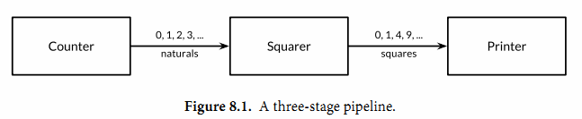

8.4. Channels
如果说goroutine是Go语言程序的并发体的话，那么channels则是它们之间的通信机制。一个channel是一个通信机制，它可以让一个goroutine通过它给另一个goroutine发送值信息。每个channel都有一个特殊的类型，也就是channels可发送数据的类型。一个可以发送int类型数据的channel一般写为chan int。
使用内置的make函数，我们可以创建一个channel：
ch := make(chan int) // ch has type 'chan int'
和map类似，channel也对应一个make创建的底层数据结构的引用。当我们复制一个channel或用于函数参数传递时，我们只是拷贝了一个channel引用，因此调用者和被调用者将引用同一个channel对象。和其它的引用类型一样，channel的零值也是nil。
两个相同类型的channel可以使用==运算符比较。如果两个channel引用的是相同的对象，那么比较的结果为真。一个channel也可以和nil进行比较。
一个channel有发送和接受两个主要操作，都是通信行为。一个发送语句将一个值从一个goroutine通过channel发送到另一个执行接收操作的goroutine。发送和接收两个操作都使用<-运算符。在发送语句中，<-运算符分割channel和要发送的值。在接收语句中，<-运算符写在channel对象之前。一个不使用接收结果的接收操作也是合法的。
ch <- x // a send statement
x = <-ch // a receive expression in an assignment statement
<-ch // a receive statement; result is discarded
Channel还支持close操作，用于关闭channel，随后对基于该channel的任何发送操作都将导致panic异常。对一个已经被close过的channel进行接收操作依然可以接受到之前已经成功发送的数据；如果channel中已经没有数据的话将产生一个零值的数据。
使用内置的close函数就可以关闭一个channel：
close(ch)
以最简单方式调用make函数创建的是一个无缓存的channel，但是我们也可以指定第二个整型参数，对应channel的容量。如果channel的容量大于零，那么该channel就是带缓存的channel。
ch = make(chan int) // unbuffered channel
ch = make(chan int, 0) // unbuffered channel
ch = make(chan int, 3) // buffered channel with capacity 3
我们将先讨论无缓存的channel，然后在8.4.4节讨论带缓存的channel。
8.4.1. 不带缓存的Channels
一个基于无缓存Channels的发送操作将导致发送者goroutine阻塞，直到另一个goroutine在相同的Channels上执行接收操作，当发送的值通过Channels成功传输之后，两个goroutine可以继续执行后面的语句。反之，如果接收操作先发生，那么接收者goroutine也将阻塞，直到有另一个goroutine在相同的Channels上执行发送操作。
基于无缓存Channels的发送和接收操作将导致两个goroutine做一次同步操作。因为这个原因，无缓存Channels有时候也被称为同步Channels。当通过一个无缓存Channels发送数据时，接收者收到数据发生在再次唤醒唤醒发送者goroutine之前（译注：happens before，这是Go语言并发内存模型的一个关键术语！）。
在讨论并发编程时，当我们说x事件在y事件之前发生（happens before），我们并不是说x事件在时间上比y时间更早；我们要表达的意思是要保证在此之前的事件都已经完成了，例如在此之前的更新某些变量的操作已经完成，你可以放心依赖这些已完成的事件了。
当我们说x事件既不是在y事件之前发生也不是在y事件之后发生，我们就说x事件和y事件是并发的。这并不是意味着x事件和y事件就一定是同时发生的，我们只是不能确定这两个事件发生的先后顺序。在下一章中我们将看到，当两个goroutine并发访问了相同的变量时，我们有必要保证某些事件的执行顺序，以避免出现某些并发问题。
在8.3节的客户端程序，它在主goroutine中（译注：就是执行main函数的goroutine）将标准输入复制到server，因此当客户端程序关闭标准输入时，后台goroutine可能依然在工作。我们需要让主goroutine等待后台goroutine完成工作后再退出，我们使用了一个channel来同步两个goroutine：
gopl.io/ch8/netcat3
func main() {
conn, err := net.Dial("tcp", "localhost:8000")
if err != nil {
log.Fatal(err)
}
done := make(chan struct{})
go func() {
io.Copy(os.Stdout, conn) // NOTE: ignoring errors
log.Println("done")
done <- struct{}{} // signal the main goroutine
}()
mustCopy(conn, os.Stdin)
conn.Close()
<-done // wait for background goroutine to finish
}
当用户关闭了标准输入，主goroutine中的mustCopy函数调用将返回，然后调用conn.Close()关闭读和写方向的网络连接。关闭网络连接中的写方向的连接将导致server程序收到一个文件（end-of-file）结束的信号。关闭网络连接中读方向的连接将导致后台goroutine的io.Copy函数调用返回一个“read from closed connection”（“从关闭的连接读”）类似的错误，因此我们临时移除了错误日志语句；在练习8.3将会提供一个更好的解决方案。（需要注意的是go语句调用了一个函数字面量，这是Go语言中启动goroutine常用的形式。）
在后台goroutine返回之前，它先打印一个日志信息，然后向done对应的channel发送一个值。主goroutine在退出前先等待从done对应的channel接收一个值。因此，总是可以在程序退出前正确输出“done”消息。
基于channels发送消息有两个重要方面。首先每个消息都有一个值，但是有时候通讯的事实和发生的时刻也同样重要。当我们更希望强调通讯发生的时刻时，我们将它称为消息事件。有些消息事件并不携带额外的信息，它仅仅是用作两个goroutine之间的同步，这时候我们可以用struct{}空结构体作为channels元素的类型，虽然也可以使用bool或int类型实现同样的功能，done <- 1语句也比done <- struct{}{}更短。
练习 8.3： 在netcat3例子中，conn虽然是一个interface类型的值，但是其底层真实类型是*net.TCPConn，代表一个TCP连接。一个TCP连接有读和写两个部分，可以使用CloseRead和CloseWrite方法分别关闭它们。修改netcat3的主goroutine代码，只关闭网络连接中写的部分，这样的话后台goroutine可以在标准输入被关闭后继续打印从reverb1服务器传回的数据。（要在reverb2服务器也完成同样的功能是比较困难的；参考练习 8.4。）
8.4.2. 串联的Channels（Pipeline）
Channels也可以用于将多个goroutine连接在一起，一个Channel的输出作为下一个Channel的输入。这种串联的Channels就是所谓的管道（pipeline）。下面的程序用两个channels将三个goroutine串联起来，如图8.1所示。

第一个goroutine是一个计数器，用于生成0、1、2、……形式的整数序列，然后通过channel将该整数序列发送给第二个goroutine；第二个goroutine是一个求平方的程序，对收到的每个整数求平方，然后将平方后的结果通过第二个channel发送给第三个goroutine；第三个goroutine是一个打印程序，打印收到的每个整数。为了保持例子清晰，我们有意选择了非常简单的函数，当然三个goroutine的计算很简单，在现实中确实没有必要为如此简单的运算构建三个goroutine。
gopl.io/ch8/pipeline1
func main() {
naturals := make(chan int)
squares := make(chan int)
// Counter
go func() {
for x := 0; ; x++ {
naturals <- x
}
}()
// Squarer
go func() {
for {
x := <-naturals
squares <- x * x
}
}()
// Printer (in main goroutine)
for {
fmt.Println(<-squares)
}
}
如您所料，上面的程序将生成0、1、4、9、……形式的无穷数列。像这样的串联Channels的管道（Pipelines）可以用在需要长时间运行的服务中，每个长时间运行的goroutine可能会包含一个死循环，在不同goroutine的死循环内部使用串联的Channels来通信。但是，如果我们希望通过Channels只发送有限的数列该如何处理呢？
如果发送者知道，没有更多的值需要发送到channel的话，那么让接收者也能及时知道没有多余的值可接收将是有用的，因为接收者可以停止不必要的接收等待。这可以通过内置的close函数来关闭channel实现：
close(naturals)
当一个channel被关闭后，再向该channel发送数据将导致panic异常。当一个被关闭的channel中已经发送的数据都被成功接收后，后续的接收操作将不再阻塞，它们会立即返回一个零值。关闭上面例子中的naturals变量对应的channel并不能终止循环，它依然会收到一个永无休止的零值序列，然后将它们发送给打印者goroutine。
没有办法直接测试一个channel是否被关闭，但是接收操作有一个变体形式：它多接收一个结果，多接收的第二个结果是一个布尔值ok，ture表示成功从channels接收到值，false表示channels已经被关闭并且里面没有值可接收。使用这个特性，我们可以修改squarer函数中的循环代码，当naturals对应的channel被关闭并没有值可接收时跳出循环，并且也关闭squares对应的channel.
// Squarer
go func() {
for {
x, ok := <-naturals
if !ok {
break // channel was closed and drained
}
squares <- x * x
}
close(squares)
}()
因为上面的语法是笨拙的，而且这种处理模式很常见，因此Go语言的range循环可直接在channels上面迭代。使用range循环是上面处理模式的简洁语法，它依次从channel接收数据，当channel被关闭并且没有值可接收时跳出循环。
在下面的改进中，我们的计数器goroutine只生成100个含数字的序列，然后关闭naturals对应的channel，这将导致计算平方数的squarer对应的goroutine可以正常终止循环并关闭squares对应的channel。（在一个更复杂的程序中，可以通过defer语句关闭对应的channel。）最后，主goroutine也可以正常终止循环并退出程序。
gopl.io/ch8/pipeline2
func main() {
naturals := make(chan int)
squares := make(chan int)
// Counter
go func() {
for x := 0; x < 100; x++ {
naturals <- x
}
close(naturals)
}()
// Squarer
go func() {
for x := range naturals {
squares <- x * x
}
close(squares)
}()
// Printer (in main goroutine)
for x := range squares {
fmt.Println(x)
}
}
其实你并不需要关闭每一个channel。只有当需要告诉接收者goroutine，所有的数据已经全部发送时才需要关闭channel。不管一个channel是否被关闭，当它没有被引用时将会被Go语言的垃圾自动回收器回收。（不要将关闭一个打开文件的操作和关闭一个channel操作混淆。对于每个打开的文件，都需要在不使用的时候调用对应的Close方法来关闭文件。）
试图重复关闭一个channel将导致panic异常，试图关闭一个nil值的channel也将导致panic异常。关闭一个channels还会触发一个广播机制，我们将在8.9节讨论。
8.4.3. 单方向的Channel
随着程序的增长，人们习惯于将大的函数拆分为小的函数。我们前面的例子中使用了三个goroutine，然后用两个channels来连接它们，它们都是main函数的局部变量。将三个goroutine拆分为以下三个函数是自然的想法：
func counter(out chan int)
func squarer(out, in chan int)
func printer(in chan int)
其中计算平方的squarer函数在两个串联Channels的中间，因此拥有两个channel类型的参数，一个用于输入一个用于输出。两个channel都拥有相同的类型，但是它们的使用方式相反：一个只用于接收，另一个只用于发送。参数的名字in和out已经明确表示了这个意图，但是并无法保证squarer函数向一个in参数对应的channel发送数据或者从一个out参数对应的channel接收数据。
这种场景是典型的。当一个channel作为一个函数参数时，它一般总是被专门用于只发送或者只接收。
为了表明这种意图并防止被滥用，Go语言的类型系统提供了单方向的channel类型，分别用于只发送或只接收的channel。类型chan<- int表示一个只发送int的channel，只能发送不能接收。相反，类型<-chan int表示一个只接收int的channel，只能接收不能发送。（箭头<-和关键字chan的相对位置表明了channel的方向。）这种限制将在编译期检测。
因为关闭操作只用于断言不再向channel发送新的数据，所以只有在发送者所在的goroutine才会调用close函数，因此对一个只接收的channel调用close将是一个编译错误。
这是改进的版本，这一次参数使用了单方向channel类型：
gopl.io/ch8/pipeline3
func counter(out chan<- int) {
for x := 0; x < 100; x++ {
out <- x
}
close(out)
}
func squarer(out chan<- int, in <-chan int) {
for v := range in {
out <- v * v
}
close(out)
}
func printer(in <-chan int) {
for v := range in {
fmt.Println(v)
}
}
func main() {
naturals := make(chan int)
squares := make(chan int)
go counter(naturals)
go squarer(squares, naturals)
printer(squares)
}
调用counter（naturals）时，naturals的类型将隐式地从chan int转换成chan<- int。调用printer(squares)也会导致相似的隐式转换，这一次是转换为<-chan int类型只接收型的channel。任何双向channel向单向channel变量的赋值操作都将导致该隐式转换。这里并没有反向转换的语法：也就是不能将一个类似chan<- int类型的单向型的channel转换为chan int类型的双向型的channel。
8.4.4. 带缓存的Channels
带缓存的Channel内部持有一个元素队列。队列的最大容量是在调用make函数创建channel时通过第二个参数指定的。下面的语句创建了一个可以持有三个字符串元素的带缓存Channel。图8.2是ch变量对应的channel的图形表示形式。
ch = make(chan string, 3)

向缓存Channel的发送操作就是向内部缓存队列的尾部插入元素，接收操作则是从队列的头部删除元素。如果内部缓存队列是满的，那么发送操作将阻塞直到因另一个goroutine执行接收操作而释放了新的队列空间。相反，如果channel是空的，接收操作将阻塞直到有另一个goroutine执行发送操作而向队列插入元素。
我们可以在无阻塞的情况下连续向新创建的channel发送三个值：
ch <- "A"
ch <- "B"
ch <- "C"
此刻，channel的内部缓存队列将是满的（图8.3），如果有第四个发送操作将发生阻塞。

如果我们接收一个值，
fmt.Println(<-ch) // "A"
那么channel的缓存队列将不是满的也不是空的（图8.4），因此对该channel执行的发送或接收操作都不会发生阻塞。通过这种方式，channel的缓存队列解耦了接收和发送的goroutine。

在某些特殊情况下，程序可能需要知道channel内部缓存的容量，可以用内置的cap函数获取：
fmt.Println(cap(ch)) // "3"
同样，对于内置的len函数，如果传入的是channel，那么将返回channel内部缓存队列中有效元素的个数。因为在并发程序中该信息会随着接收操作而失效，但是它对某些故障诊断和性能优化会有帮助。
fmt.Println(len(ch)) // "2"
在继续执行两次接收操作后channel内部的缓存队列将又成为空的，如果有第四个接收操作将发生阻塞：
fmt.Println(<-ch) // "B"
fmt.Println(<-ch) // "C"
在这个例子中，发送和接收操作都发生在同一个goroutine中，但是在真实的程序中它们一般由不同的goroutine执行。Go语言新手有时候会将一个带缓存的channel当作同一个goroutine中的队列使用，虽然语法看似简单，但实际上这是一个错误。Channel和goroutine的调度器机制是紧密相连的，如果没有其他goroutine从channel接收，发送者——或许是整个程序——将会面临永远阻塞的风险。如果你只是需要一个简单的队列，使用slice就可以了。
下面的例子展示了一个使用了带缓存channel的应用。它并发地向三个镜像站点发出请求，三个镜像站点分散在不同的地理位置。它们分别将收到的响应发送到带缓存channel，最后接收者只接收第一个收到的响应，也就是最快的那个响应。因此mirroredQuery函数可能在另外两个响应慢的镜像站点响应之前就返回了结果。（顺便说一下，多个goroutines并发地向同一个channel发送数据，或从同一个channel接收数据都是常见的用法。）
func mirroredQuery() string {
responses := make(chan string, 3)
go func() { responses <- request("asia.gopl.io") }()
go func() { responses <- request("europe.gopl.io") }()
go func() { responses <- request("americas.gopl.io") }()
return <-responses // return the quickest response
}
func request(hostname string) (response string) { /* ... */ }
如果我们使用了无缓存的channel，那么两个慢的goroutines将会因为没有人接收而被永远卡住。这种情况，称为goroutines泄漏，这将是一个BUG。和垃圾变量不同，泄漏的goroutines并不会被自动回收，因此确保每个不再需要的goroutine能正常退出是重要的。
关于无缓存或带缓存channels之间的选择，或者是带缓存channels的容量大小的选择，都可能影响程序的正确性。无缓存channel更强地保证了每个发送操作与相应的同步接收操作；但是对于带缓存channel，这些操作是解耦的。同样，即使我们知道将要发送到一个channel的信息的数量上限，创建一个对应容量大小的带缓存channel也是不现实的，因为这要求在执行任何接收操作之前缓存所有已经发送的值。如果未能分配足够的缓存将导致程序死锁。
Channel的缓存也可能影响程序的性能。想象一家蛋糕店有三个厨师，一个烘焙，一个上糖衣，还有一个将每个蛋糕传递到它下一个厨师的生产线。在狭小的厨房空间环境，每个厨师在完成蛋糕后必须等待下一个厨师已经准备好接受它；这类似于在一个无缓存的channel上进行沟通。
如果在每个厨师之间有一个放置一个蛋糕的额外空间，那么每个厨师就可以将一个完成的蛋糕临时放在那里而马上进入下一个蛋糕的制作中；这类似于将channel的缓存队列的容量设置为1。只要每个厨师的平均工作效率相近，那么其中大部分的传输工作将是迅速的，个体之间细小的效率差异将在交接过程中弥补。如果厨师之间有更大的额外空间——也是就更大容量的缓存队列——将可以在不停止生产线的前提下消除更大的效率波动，例如一个厨师可以短暂地休息，然后再加快赶上进度而不影响其他人。
另一方面，如果生产线的前期阶段一直快于后续阶段，那么它们之间的缓存在大部分时间都将是满的。相反，如果后续阶段比前期阶段更快，那么它们之间的缓存在大部分时间都将是空的。对于这类场景，额外的缓存并没有带来任何好处。
生产线的隐喻对于理解channels和goroutines的工作机制是很有帮助的。例如，如果第二阶段是需要精心制作的复杂操作，一个厨师可能无法跟上第一个厨师的进度，或者是无法满足第三阶段厨师的需求。要解决这个问题，我们可以再雇佣另一个厨师来帮助完成第二阶段的工作，他执行相同的任务但是独立工作。这类似于基于相同的channels创建另一个独立的goroutine。
我们没有太多的空间展示全部细节，但是gopl.io/ch8/cake包模拟了这个蛋糕店，可以通过不同的参数调整。它还对上面提到的几种场景提供对应的基准测试（§11.4） 。